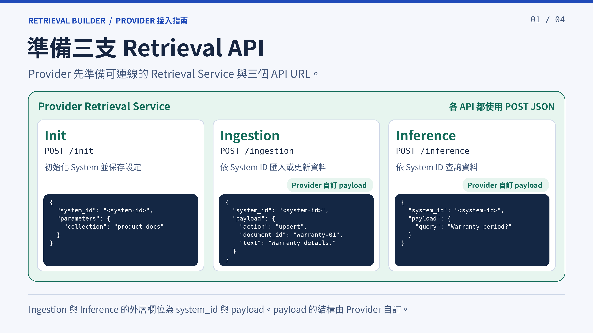
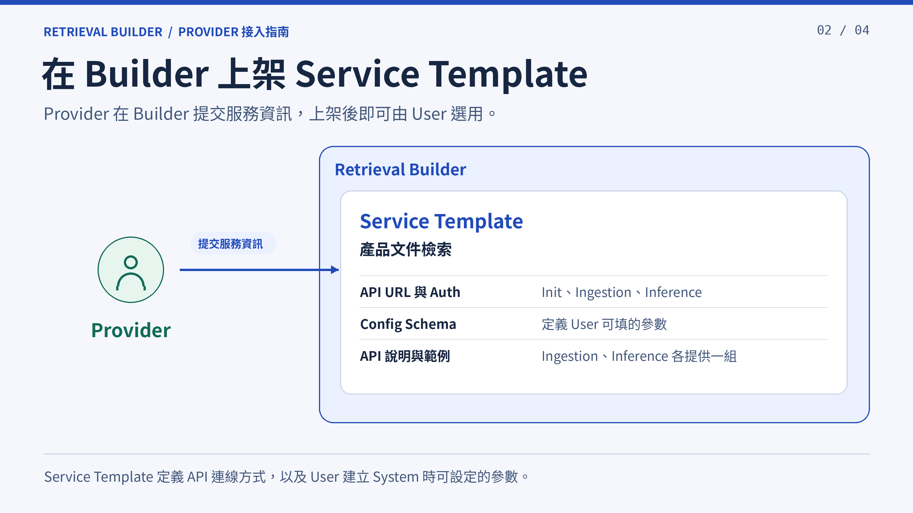
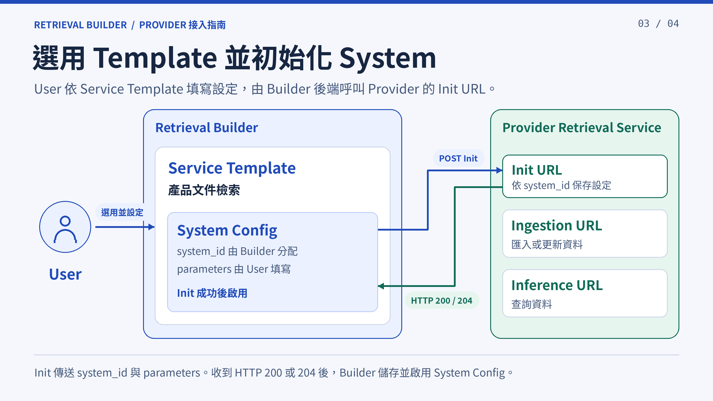
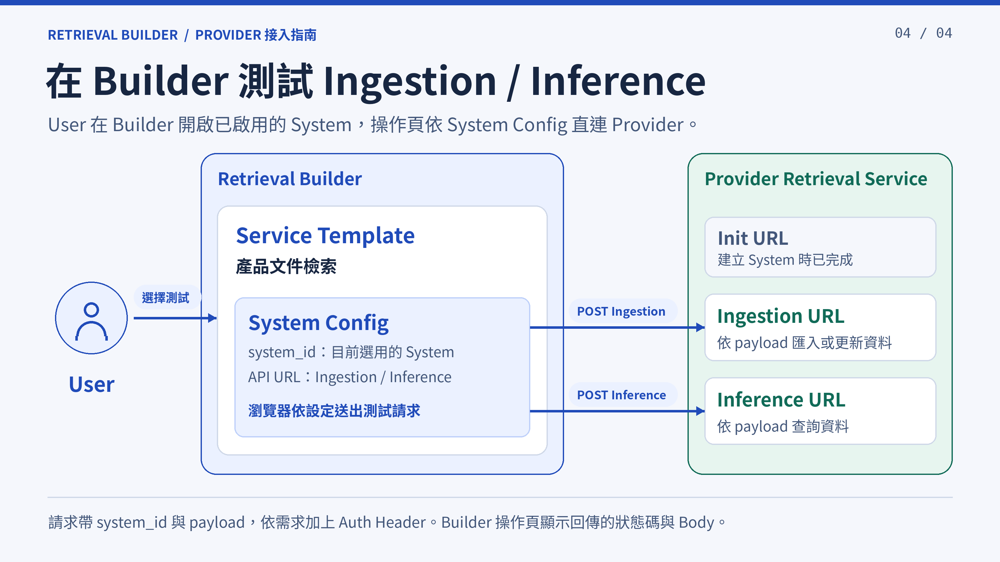

1. 準備 Retrieval Service


三支 API 都使用 POST 和 Content-Type: application/json。下列路徑為範例，上架時請填實際 URL。
| API | Request Body | 呼叫端 |
|---|---|---|
/init | {system_id, parameters} | Builder 後端 |
/ingestion | {system_id, payload} | User 的瀏覽器或應用程式 |
/inference | {system_id, payload} | User 的瀏覽器或應用程式 |
Builder 分配 system_id。Init 送出 User 填寫的完整 parameters，沒有參數時送 {}。Provider 依 ID 保存設定並準備資源。Ingestion 和 Inference 的 payload 由 Provider 自訂。
查看三支 API 的 JSON 範例
Init
{
"system_id": "7b38858b-6f26-4647-9dfb-84044000413a",
"parameters": {"collection": "product_docs"}
}Ingestion
{
"system_id": "7b38858b-6f26-4647-9dfb-84044000413a",
"payload": {"action": "upsert", "document_id": "warranty-01", "text": "產品保固一年。"}
}Inference
{
"system_id": "7b38858b-6f26-4647-9dfb-84044000413a",
"payload": {"query": "產品保固多久？"}
}瀏覽器連線與 CORS
Init URL 須能從 Builder 後端連線。Ingestion 和 Inference URL 須能從使用者的瀏覽器或應用程式連線。
若業務 API 和 Builder UI 不同來源，Provider 需處理 OPTIONS 預檢，允許 Builder UI 的 Origin、POST、Content-Type 及業務 Auth Header，並在成功與錯誤回應都加上 Access-Control-Allow-Origin。HTTPS 的 Builder 頁面應搭配 HTTPS 業務 API。
2. 在 Builder 上架 Service Template


進入 Provider → Provide Retrieval System Template，填完以下欄位並按上架服務。Builder 驗證通過後，Template 會出現在目錄。
| 欄位 | 填寫內容 |
|---|---|
| 服務名稱 | User 在目錄和選單看到的名稱。 |
| 三個 API URL 與 Auth | Init、Ingestion 和 Inference 各填一組。沒有 Auth 的 API 可將欄位留空。 |
| Config Schema | 定義 User 可填的參數、型別、必填欄位和預設值。可先在右側預覽表單。 |
| API 說明與 JSON 範例 | Ingestion 和 Inference 各填一組。說明可執行的操作與回應格式，sample 填 payload 的內容。 |
Init 的 secret_ref 指向 Builder 後端環境變數，該變數保存完整 Header 值。Ingestion 和 Inference 的憑證由呼叫端提供，Template 可宣告 Header 名稱與格式提示。
查看完整 Service Template JSON
{
"system_name": "產品文件檢索",
"apis": {
"init": {
"url": "https://provider.example.com/init",
"auth": {"header": "Authorization", "secret_ref": "PROVIDER_INIT_AUTH"}
},
"ingestion": {
"url": "https://provider.example.com/ingestion",
"auth": {"header": "Authorization", "scheme": "Bearer"},
"description": "輸入文件 ID 與文字，上傳或覆寫文件。",
"sample": {"action": "upsert", "document_id": "warranty-01", "text": "產品保固一年。"}
},
"inference": {
"url": "https://provider.example.com/inference",
"auth": {"header": "Authorization", "scheme": "Bearer"},
"description": "輸入 query，回應包含檢索結果。",
"sample": {"query": "產品保固多久？"}
}
},
"config_schema": {
"type": "object",
"properties": {
"collection": {"type": "string", "title": "資料集", "default": "product_docs"},
"top_k": {"type": "integer", "title": "回傳筆數", "default": 5}
},
"required": ["collection"],
"additionalProperties": false
}
}Config Schema 支援 string、integer、number、boolean。可用 enum 產生下拉選單。沒有可填參數時，可用 {"type":"object","properties":{}}。
3. 選用 Template 並初始化 System


- User 從 User → Create Retrieval System 選用 Template，填好參數後提交。
- Builder 後端呼叫 Provider 的 Init URL，送出
system_id和parameters。 - Provider 初始化完成後回傳 HTTP
200或204，Builder 才儲存並啟用 System Config。Builder 顯示 Init 回應，請只回傳可供操作者查看的資訊。
Edit Config 沿用原本的 system_id 並送出新的完整參數。Provider 應支援以同一 ID 重送相同設定，更新失敗時保留原本生效的設定。若 Builder 未取得 Init 結果，畫面會提供沿用相同 ID 和設定的重試選項。
4. 在 Builder 測試 Ingestion／Inference


User 在已啟用的 System 圖卡選 Ingest 或 Inference。操作頁依 System Config 取得 URL 和 system_id，並用 Template 範例預填 payload。
User 可編輯 payload 並依需填寫 Auth。瀏覽器直接送出請求，操作頁顯示 Provider 回傳的 HTTP 狀態碼及 Body。Provider 負責驗證呼叫端可否操作該 system_id。
應用程式可使用相同的 URL、system_id、Body 格式與 Auth 直接呼叫。Export YAML 可下載連線資訊。
使用內建 Mock 測試
python router_method/mock_retrieval_service.py選擇 Mock Retrieval Service 範本，填寫 domain_name 後建立 System。Ingestion 和 Inference 測試可填入範例憑證 Bearer mock-token。回應的 see payload 顯示 Mock 收到的 Request Body。